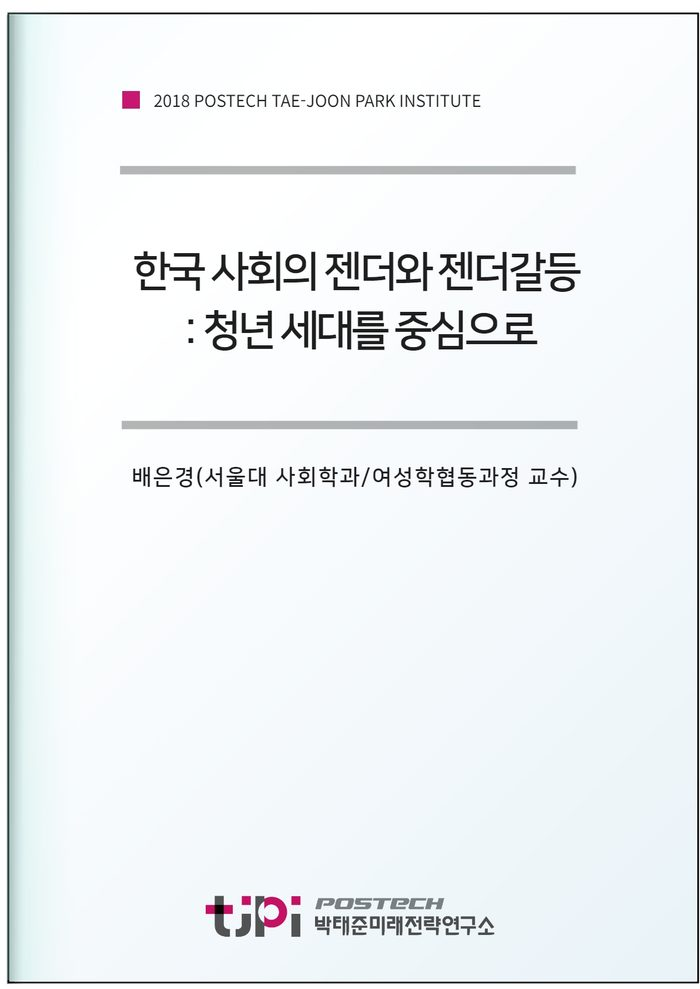

저자 배은경(서울대 사회학 교수)연재일 2018-11-30

요 약
한국의
압축적
근대화
과정에서
가장
급격하게
변화한
것이
있다면
젠더관계일
것이다
젠더
관계에
대한
국민의
인식은
세대
차이가
매우
크며
최근에는
2,30
이하의
젊은
연령대를
중심으로
남성과
여성의
성대결
양상이
벌어지고
있기도
하다
급격한
젠더관계의
변화
속에서도
사생활
문제
혹은
여성
만의
문제로
여겨져서
수면
아래에
잠복해
있던
젠더
갈등은
2015
이른바
강남역
살인사건
이후
여성혐오에
항의하는
여성들의
목소리가
힘을
얻기
시작하면서
사회문제
부상한
, 2018
미투
운동
국면을
전환점으로
점차
한국사회의
중심
갈등으로
부각되는
모습이다
남성과
여성의
생물학적
성별의
문제나
가부장제
자체에
대한
도덕적
단죄의
시각이
아니라
사회구조
속에서
배태되고
대중적
감정과
열망을
바탕으로
정치화되는
사회문제
로서
젠더갈등
문제에
접근하는
연구가
필요한
시점이다
젠더관계와 젠더갈등을 생물학적 성별로서의
여성
의 문제나 양 성
(two
sexes)
간의 대결 문제로 보는 관점을 지양하고
한국사회의 압축적 근대화 과정과 가족
시장
국가
정치사회
영역의 재편 속에서 성역할과 성적 주체성에 대한 관념의 변화가 젠더 갈등의 양상으로 드러나게 되는 기본적인 흐름을 확인한다
이러한 역사적 흐름의 맥락 위에서
최근 두드러진 젠더 갈등의 표출방식을
이해해 본다
최근 젊은 세대의 젠더갈등은 인터넷과
SNS
디지털 경험을 매개로 두드러지며
새로운 민주화의 흐름 속에서
여성
으로서 목소리를 내는 정치적 주체들이 기존 정치의 문법을 흔들면서 등장하는 것과 관련이 있다
디지털 민주주의와 디지털 주체의 행위성 문제의 관점에서 최근의 젠더갈등을 연구한다
목 차
1. 젠더갈등은 성대결이 아니다
2. 사회적 범주로서의 젠더
3. 삶의 재생산 체계의 변화와 젠더
4. 젠더 관점이 부재한 ‘청년 세대’ 담론의 문제
5. 한국 청년 세대의 남성성
5. 디지털 네이티브 세대의 청년 여성
참고문헌
내 용
[2018 연구논문] 한국 사회의 젠더와 젠더갈등 : 청년 세대를 중심으로
배은경(서울대 사회학 교수)
원문은
미래전략연구총서 11
막힌사회와 그 비상구들]로
발간되었습니다.